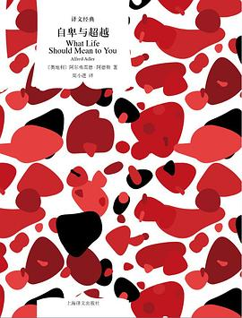
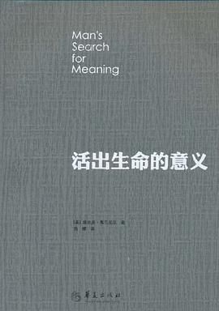
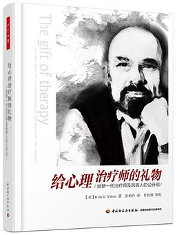
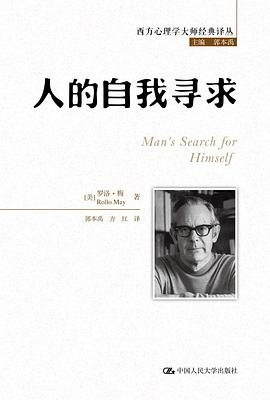
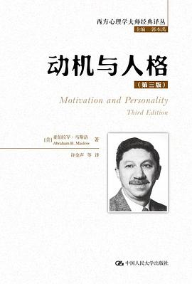

第三阶 把过去说清楚（流派原典）
弗洛伊德、阿德勒、存在主义——各流派的「一手声音」。原典比二手转述更慢，但也更少被歪曲。

《自卑与超越》[奥] 阿尔弗雷德·阿德勒
阿德勒亲笔：自卑感不是病，是所有人往上走的起点；出问题的不是自卑，是对自卑的解释和补偿方式。《被讨厌的勇气》读得上头，可以来这里看原著本人怎么说。
什么时候读：骨子里觉得自己不够好（G-04 那一节）的人。
京东购买 →《梦的解析》[奥] 西格蒙德·弗洛伊德
精神分析的起点。今天读它的意义不在结论对不对，而在它教会的这件事：你以为的「无心」，大多有意；你压抑的，会换个样子回来。读之前可以先看这个网站第三章第一节的预告。
什么时候读：对梦、对「潜意识」这两个词认真好奇的人。读不下去就放下，不是你的问题。
京东购买 →
《活出生命的意义》[奥] 维克多·弗兰克尔
集中营幸存者、意义疗法创始人写下的亲历与理论。他给出这个网站 I 组那个问题的最重回答之一：人不该问生命有什么意义，是生命在问我们——而你每时每刻都在用行动作答。
什么时候读：「活着到底为了什么」绕不开的时候（D-05、I-01）。
京东购买 →《存在主义心理治疗》[美] 欧文·亚隆
死亡、自由、孤独、无意义——存在主义的四大命题，被系统地摊开讲。学术但可读，它能把「说不清为什么就是难受」翻译成说得清的东西。
什么时候读：第 I 组（意义与存在）所有条目读完后还想往深走的人。
京东购买 →
《给心理治疗师的礼物》[美] 欧文·亚隆
亚隆写给同行的 85 条短文，每条一页纸。外行读它，等于听一位执业五十年的老治疗师聊「人心是怎么被弄明白的」。
什么时候读：想理解「咨询到底在做什么」、或考虑成为助人者的人。
京东购买 →
《人的自我寻求》[美] 罗洛·梅
「空心病」的前身描述：现代人失去了自我感，于是要么空虚要么焦虑。罗洛·梅给出的出路不是「找到答案」，而是先找回「成为自己的勇气」。
什么时候读：一切都顺利、心里却空得很（I-04），或总觉得自己在演（I-05）的人。
京东购买 →
《动机与人格》[美] 亚伯拉罕·马斯洛
需要层次理论的出处。被误传最多的一个理论——它讲的不是「先赚够钱才配快乐」，而是人的成长永远在「缺失」与「生长」之间摇摆，这个网站第一章的底层逻辑之一。
什么时候读：想知道「我到底缺什么」的时候。
京东购买 →